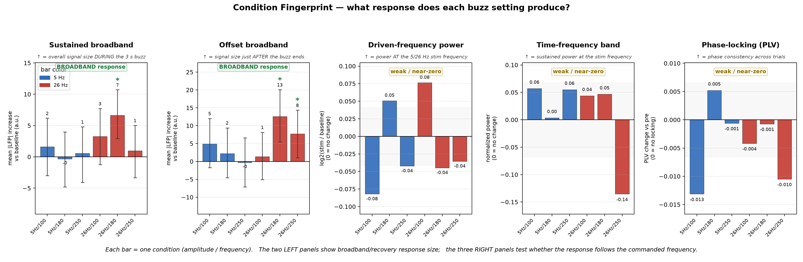
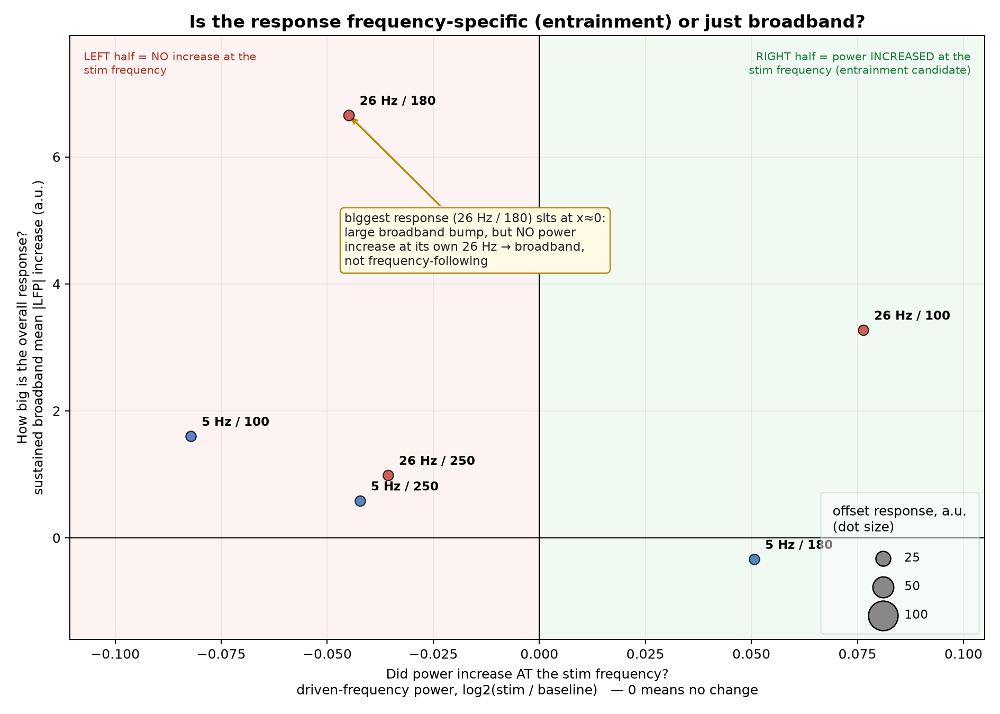
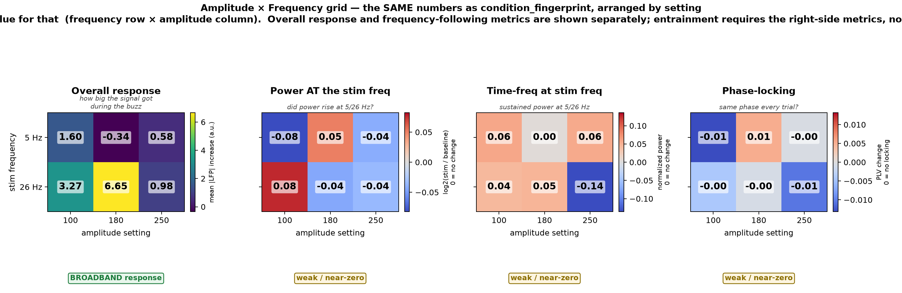

These figures combine the current condition-level metrics into a small number of biological views.
Reading guide: broadband LFP is overall response size from the corrected equal-window trial table; driven-frequency power asks whether power increased specifically at 5 Hz or 26 Hz; PLV asks whether phase became consistent across trials.



Back to main dashboard.